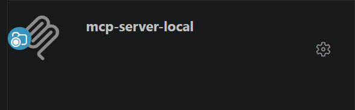

Local MCP Server
- VSCode Extension -> MCP Servers

Overview
Local MCP Server는 **VS Code MCP Gateway**를 통해 연결되는 로컬 실행용 MCP Server이다.
현재 문서의 기준은 다음과 같다.
- OpenClaw는 사용하지 않는다
- 서버 등록과 실행은
.vscode/mcp.json기준으로 설명한다 - 테스트 요청의 시작점은
Tag Event가 아니라 **GitHub Issue Event / TEST Issue 요청**이다 - 각 MCP Tool은 실행 결과를 **log 파일**과 **JSON 결과 파일**로 남긴다
- Tool 종류는 현재 운영 방향에 맞춰 최소 집합으로 유지한다
권장 흐름:
GitHub Issue (TEST 요청)
→ GitHub MCP Server로 Issue 내용 확인
→ Local MCP Server Tool 실행
→ logs + results JSON 저장
→ GitHub Issue 댓글 또는 후속 문서로 보고
Current Direction
이 문서는 현재 구현 완료 상태를 모두 설명하는 문서라기보다,
**VS Code 기반 Local MCP Server의 목표 운영 방식**을 정리한 문서다.
현재 코드 기준으로 일부 Tool은 stub이거나 축소 구현일 수 있다.
문서의 초점은 다음 구조를 명확히 하는 데 있다.
- VS Code가 MCP Server를 시작한다
- GitHub Issue 기반으로 테스트 요청을 읽는다
- Local MCP Tool이 실제 장치/로그/디버그 데이터를 수집한다
- 각 Tool은
.log와.json결과를 남긴다 - 이후 분석 또는 보고는 GitHub MCP와 연계해 처리한다
MCP Server Local
Github Issue Trigger
- GitHub Issue 기반 TEST 요청
- 사용자는 test_request.md 템플릿으로 TEST 이슈생성
Target Runner, 테스트 종류, 장치/이미지, 반복 횟수, 제약 사항을 기록- AI Agent 또는 운영자가 GitHub MCP Server로 이슈 내용 분석
- Local MCP Tool 실행
- TEST 결과보고
- Result : Json 과 Log
- GitHub Issue 보고
Runner Assignment
여러 실행 주체가 있을 경우 Target Runner 값으로 담당 대상을 구분한다.
- 예:
local-dev,lab-node-01,qemu-runner,windows-host - 실행 주체는 자신에게 해당하는
Target Runner요청만 처리한다 - 처리 시작 시 assignee 또는 label로 실행 중 상태를 표시할 수 있다
VS Code Configuration
Local MCP Server는 .vscode/mcp.json으로 등록.
예시:
{
"servers": {
"mcp-server-local": {
"type": "stdio",
"command": "C:\\Python314\\python.exe",
"args": ["-X", "utf8", "-m", "mcp.main.server_local"],
"cwd": "${workspaceFolder}"
}
}
}
의미:
- VS Code가
mcp-server-local프로세스를 시작 - MCP
initialize,tools/list,tools/call은 VS Code MCP Gateway를 통해 전달 - Tool discovery와 Tool 호출은 VS Code 내부 MCP 시스템이 처리
Tool Set
문서 기준 Local MCP Server의 목표 Tool 집합.
| Tool | 목적 | 설명 |
|---|---|---|
flash_tool() |
이미지 반영 | 장치 또는 대상 환경에 펌웨어/이미지 반영 |
uart_capture() |
UART 로그 수집 | 시리얼 포트 기반 런타임 로그 수집 |
get_debug() |
디버그 정보 수집 | 디버그 덤프, 상태 정보, 추가 진단 데이터 수집 |
channels() |
결과 전달 | GitHub 등 외부 채널로 결과 또는 알림 전달 |
do_test_<type>_<nn>() |
테스트 실행 단위 | 특정 테스트 시나리오를 독립 Tool로 정의 |
설계 의도:
- Tool은 너무 크게 뭉치지 않고 역할별로 나눈다
do_test_<type>_<nn>()는 실제 테스트 시나리오 단위를 표현한다uart_capture()와get_debug()는 테스트 내부 또는 독립 단계에서 사용될 수 있다- 결과 전달은
channels()가 담당한다
Protocol Flow
sequenceDiagram
participant U as User / Operator
participant GH as GitHub Issue
participant GM as GitHub MCP Server
participant VG as VS Code MCP Gateway
participant LM as Local MCP Server
participant J as log + result.json
U->>GH: TEST Issue 생성
GM->>GH: Issue 내용 조회
VG->>LM: tools/call
LM->>LM: flash_tool / uart_capture / get_debug / do_test_* 실행
LM-->>J: .log + .json 저장
VG->>GM: 결과 보고용 후속 호출실행 관점에서 보면:
- GitHub Issue가 테스트 요청을 담는다
- GitHub MCP Server가 요청 내용을 읽는다
- VS Code MCP Gateway를 통해 Local MCP Tool이 호출된다
- Local MCP Server는 로그와 JSON 결과를 저장한다
- 이후 요약/분석/보고는 GitHub MCP와 연계한다
Output Rules
각 Tool 실행 결과는 최소 두 가지 산출물을 남기는 것을 목표로 한다.
- Log file: 원시 실행 로그
- JSON result file: 구조화된 실행 결과 요약
File Naming
| Tool | Log file | JSON result |
|---|---|---|
flash_tool() |
logs/flash_<timestamp>.log |
results/flash_<timestamp>.json |
uart_capture() |
logs/uart_<timestamp>.log |
results/uart_<timestamp>.json |
get_debug() |
logs/debug_<timestamp>.log |
results/debug_<timestamp>.json |
do_test_<type>_<nn>() |
logs/test_<type>_<nn>_<timestamp>.log |
results/test_<type>_<nn>_<timestamp>.json |
channels() |
logs/channels_<timestamp>.log |
results/channels_<timestamp>.json |
Result JSON Example
{
"tool": "do_test_uart_01",
"timestamp": "2026-04-17T10:00:00Z",
"status": "success",
"exit_code": 0,
"log_path": "logs/test_uart_01_20260417T100000.log",
"duration_ms": 1200,
"context": {
"target": "/dev/ttyUSB0",
"issue_number": 12
}
}
Required Fields
| Field | Description |
|---|---|
tool |
실행한 Tool 이름 |
timestamp |
실행 시각 |
status |
success / error |
exit_code |
프로세스 또는 실행 결과 코드 |
log_path |
관련 로그 파일 경로 |
duration_ms |
실행 시간 |
context |
Issue 요청 또는 테스트 파라미터 |
Tool Definition Notes
flash_tool()
- 목적: 테스트 대상 장치/환경에 이미지 반영
- 입력 예시:
image,interface,target - 출력: flash 로그 + flash 결과 JSON
uart_capture()
- 목적: UART 기반 로그 수집
- 입력 예시:
port,baudrate,timeout - 출력: uart 로그 + uart 결과 JSON
get_debug()
- 목적: 추가 디버그 정보 수집
- 예: 레지스터 상태, 진단 텍스트, 디버그 덤프, 상태 파일
- 출력: debug 로그 + debug 결과 JSON
channels()
- 목적: 결과 전달 또는 알림 전송
- 예: GitHub Issue 댓글, Slack, 이메일
- 출력: channels 로그 + channels 결과 JSON
do_test_<type>_<nn>()
- 목적: 구체적인 테스트 시나리오 1개를 독립 Tool로 정의
- 예:
do_test_uart_01,do_test_smoke_01,do_test_boot_01 - 출력: 각 테스트별 로그 + 결과 JSON
이 naming 방식의 장점:
- 테스트 시나리오가 Tool 이름만으로 드러남
- GitHub Issue 요청과 테스트 결과를 쉽게 매핑 가능
- 이후 실패 패턴 분석과 문서화가 쉬움
Agent Role
| Agent | Role | Access |
|---|---|---|
| Local AI | 실행 전담 | flash_tool, uart_capture, get_debug, do_test_*, channels |
| Remote / Sub AI | 분석 및 보고 | JSON 결과와 로그를 읽고 요약/분석 |
| GitHub MCP | 요청/보고 연결 | Issue 조회, 댓글 작성, 상태 반영 |
Practical Usage
현재 구조에서 현실적인 사용 예시는 아래와 같다.
- GitHub에
Test Request이슈 생성 - 이슈에 대상 ref, 테스트 종류, 장치 정보 기록
- GitHub MCP Server로 이슈 확인
- Local MCP Server에서 필요한 Tool 실행
logs/와results/에 실행 결과 저장- GitHub MCP Server로 결과를 이슈에 댓글 또는 상태로 보고
Related
- mcp_gateway.md — VS Code MCP Gateway와 다중 MCP Server 연결
- mcp_server_github.md — GitHub MCP Server 역할
- test_request.md — TEST 요청용 Issue 템플릿